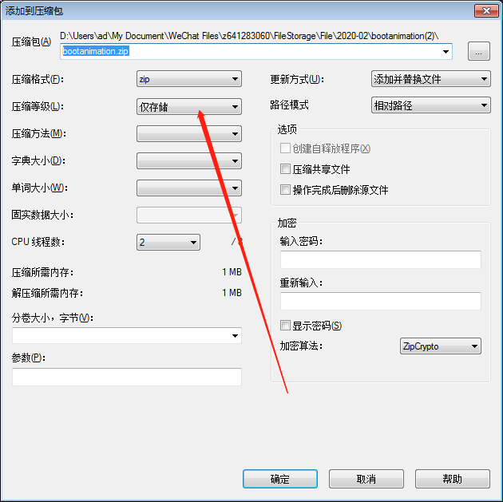

bootanimation
Android动态界面
参考文档
desc.txt
1920 1080 25
p 1 0 part0
p 0 0 part1
steps
device/fsl/imx8q/etc/bootanimation.zip
cd device/fsl/imx8q/
grep bootanimation.zip * -R
mek_8q/BoardConfig.mk: device/fsl/imx8q/etc/bootanimation.zip:system/media/bootanimation.zip
/system/media/bootanimation.zip
7zip打包方法
